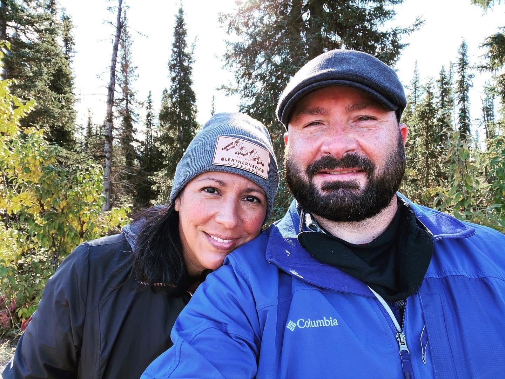

Who we are:
Leatherneck Overland consists of a couple that has been together for over two decades. Christopher Reynoso was in the United States Marine Corps for nearly 30 years and was able to achieve the rank of Sergeant Major before he retired. After deploying all over the world throughout his career as well as being stationed all over the country, he and his wife, Evelyn, wished to continue their pattern of traveling. They created a page to document their travels so they created an Instagram account called leatherneck_overland. Here they document all of their travels, such as their recent trip to Alaska or their trip to Iceland. The story behind the name Leatherneck Overland is the term "leatherneck" is actually used to refer to Marines and the term "overlanding" actually refers to the style of traveling they do. Learn more about overlanding on that page!
